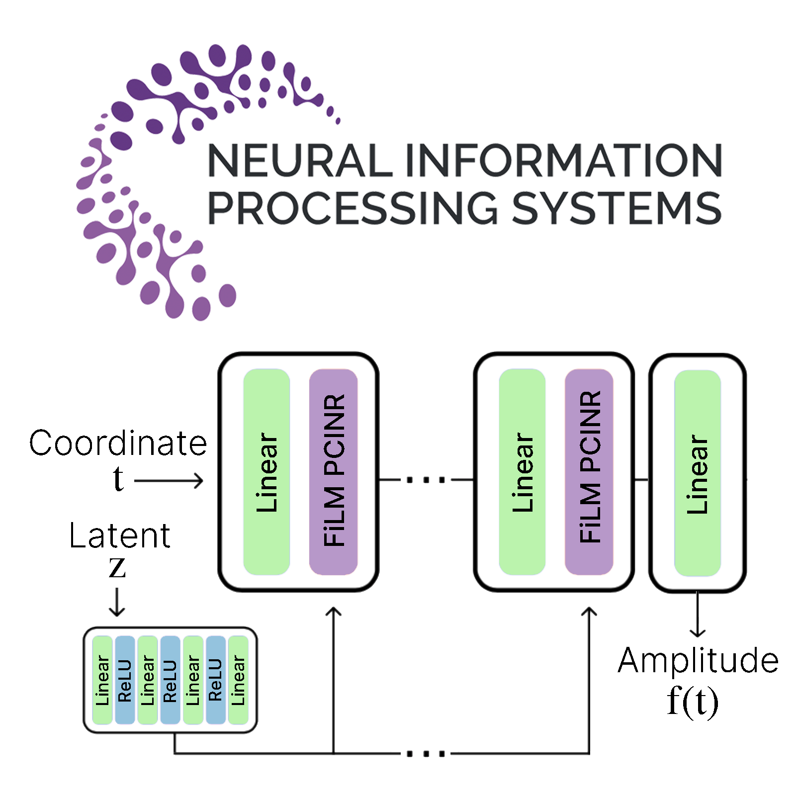
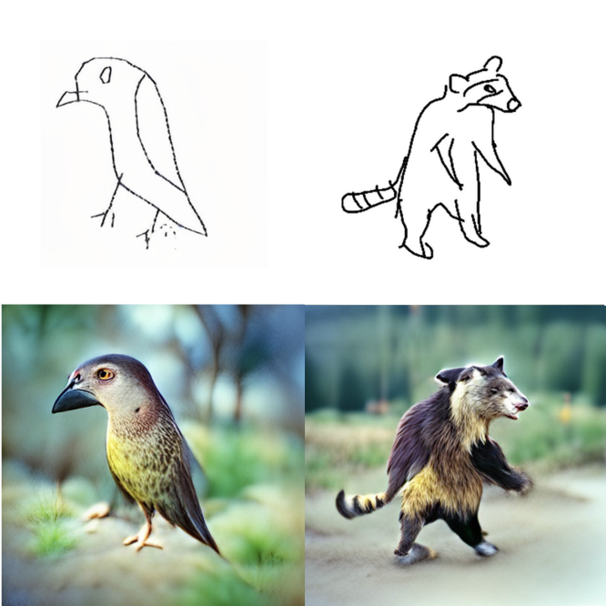

About me
I'm a graduate of the MSc Artificial Intelligence (University of Amsterdam). Currently I'm researching applications of machine learning in art at the Royal Conservatoire and the Royal Academy of Art in The Hague.
Motivated by curiosity and fascination for the fast developing field of artificial intelligence, I try to understand and shed light on the profound processes underlying AI methods that are transforming our world by approaching the topic from both a creative- and scientific perspective. I aim to raise awareness of the power of machine learning as a creativity enhancing tool and the possibilities it creates for anyone, even those that do not feel creative, to create.
News
April 2023
I'm thrilled to announce that my latest project, "Touching Distance," has been funded by the Digital Culture Grant Scheme of the Creative Industries Fund. "Touching Distance" is an immersive installation that uses cutting-edge technology to transform visitors' moving bodies into low-latency, high precision, theremin-like sensors. As visitors interact with the space, they create visually and acoustically rich representations of their movements, fostering a sense of intimacy and connection with the environment.
The project aims to push the boundaries of human interaction with technology, exploring how art, science, and digital culture intersect. This unique experience enables participants to engage in a dynamic, multi-sensory encounter that reflects the fluidity and complexity of human connection. Stay tuned for progress updates and exhibition details!
The project aims to push the boundaries of human interaction with technology, exploring how art, science, and digital culture intersect. This unique experience enables participants to engage in a dynamic, multi-sensory encounter that reflects the fluidity and complexity of human connection. Stay tuned for progress updates and exhibition details!
January 2023
I gave a seminar at Whello, a leading digital marketing agency, on the use of generative AI in business. I covered the latest advancements in the field and shared my insights on how businesses can leverage these technologies for growth and innovation. The seminar was well-received and sparked interesting discussions. I am now open for inquiries and available for consultation on how to make the best use of generative AI!
October 2022
Exciting news! I gave my installation "MIDIalogue" a large upgrade. The new version features upgraded sensors and improved machine learning architecture, providing a more responsive and accurate musical experience for visitors. The virtual harp is ready to engage in musical conversations like never before. Bookings are now open for festivals, exhibitions, club nights and corporate events. Don't miss the opportunity to experience the latest advancements in musical interaction with technology. Contact me if you're interested!
June 2022
I published my work Style-Content Disentanglement in Language-Image Pretraining Representations for Zero-Shot Sketch-to-Image Synthesis on Arxiv. I found that CLIP embeddings exhibit a similar kind of compositionality as seen in word2vec embeddings, e.g, king - man + woman = queen, a hunch I had based on their sharing of contrastive training.
My results demonstrate that this can be exploited to achieve an open-domain sketch-to-image model competitive with state-of-the-art instance-level models, while only depending on pretrained off-the-shelf models and a fraction of the data.
My results demonstrate that this can be exploited to achieve an open-domain sketch-to-image model competitive with state-of-the-art instance-level models, while only depending on pretrained off-the-shelf models and a fraction of the data.
May 2022
This month a new installation I made dubbed "Dream Machine" will be exhibited in De School next to MIDIalogue. I'll soon publish a paper about the machine learning techniques I've used for it's sketch-to-image algorithm.
The installation consists of a hacked 00's Xerox photocopier. In front of the Xerox machine is a drawing table with paper and markers, inviting visitors to get creative. The machine scans input drawings, generates an artistic image based on the content of the input, and prints the output.
The installation consists of a hacked 00's Xerox photocopier. In front of the Xerox machine is a drawing table with paper and markers, inviting visitors to get creative. The machine scans input drawings, generates an artistic image based on the content of the input, and prints the output.
December 2021
My paper Towards Lightweight Controllable Audio Synthesis using Conditional Implicit Neural Representations based on my work at AMLab is accepted at both Machine Learning for Creativity and Design and Deep Generative Models and Downstream Applications at NeurIPS '21. I'm invited to give an oral presentation at the latter.
My work "MIDIalogue" is selected to be featured in the Machine Learning for Creativity and Design gallery.
My work "MIDIalogue" is selected to be featured in the Machine Learning for Creativity and Design gallery.
October 2021
My first installation, "MIDIalogue", will be exhibited at De School for the coming editions of the "a Perception of Space and Time" series of events.
MIDIalogue functions as an interface between visitors and a transformer neural network trained for melody generation and continuation. The interface consists of immaterial, but visible and pluckable strings. Like a virtual harp. The machine listens to visitors' melodic input, produces musical reactions and imposes possible conversation directions accordingly, assuring a harmonious, ever-evolving discourse.
MIDIalogue functions as an interface between visitors and a transformer neural network trained for melody generation and continuation. The interface consists of immaterial, but visible and pluckable strings. Like a virtual harp. The machine listens to visitors' melodic input, produces musical reactions and imposes possible conversation directions accordingly, assuring a harmonious, ever-evolving discourse.
September 2021
I graduated cum laude from the MSc Artificial Intelligence at the University of Amsterdam, with my thesis on implicit neural representations applied to Audio: Representing Audio in a Distribution of Continuous Functions.
Also, I'm starting a new master: Art Science at the Royal Conservatoire and the Royal Academy of Art in The Hague. During my time here I'll be researching applications of machine learning in art.
Also, I'm starting a new master: Art Science at the Royal Conservatoire and the Royal Academy of Art in The Hague. During my time here I'll be researching applications of machine learning in art.
January 2021
I just started a research internship at the Amsterdam Machine Learning Lab (AMLab). I'll research applications of implicit neural representations in generative networks for audio synthesis, supervised by drs. Marco Federici and dr. Erik Bekkers.
Publications

Towards Lightweight Controllable Audio Synthesis with Conditional Implicit Neural Representations
NeurIPS 2021, Deep Generative Models and Downstream Applications (Oral)
NeurIPS 2021, Machine Learning for Creativity and Design (Poster)
NeurIPS 2021, Machine Learning for Creativity and Design (Poster)
[Paper]
[Project page]
[Code]
In this work, we aim to shed light on the potential of Conditional Implicit Neural Representations (CINRs) as lightweight backbones in generative frameworks for audio synthesis. Our experiments show that small Periodic Conditional INRs (PCINRs) learn faster and generally produce quantitatively better audio reconstructions than Transposed Convolutional Neural Networks with equal parameter counts. However, their performance is very sensitive to activation scaling hyperparameters. We validate noise presence can be minimized by applying standard weight regularization during training or decreasing the compositional depth of PCINRs, and suggest directions for future research.
In this work, we aim to shed light on the potential of Conditional Implicit Neural Representations (CINRs) as lightweight backbones in generative frameworks for audio synthesis. Our experiments show that small Periodic Conditional INRs (PCINRs) learn faster and generally produce quantitatively better audio reconstructions than Transposed Convolutional Neural Networks with equal parameter counts. However, their performance is very sensitive to activation scaling hyperparameters. We validate noise presence can be minimized by applying standard weight regularization during training or decreasing the compositional depth of PCINRs, and suggest directions for future research.

Style-Content Disentanglement in Language-Image Pretraining Representations for Zero-Shot Sketch-to-Image Synthesis
Arxiv
[Paper]
[Code]
In this work, we propose and validate a framework to leverage language-image pretraining representations for training-free zero-shot sketch-to-image synthesis. Our approach for disentangling style and content entails a simple method consisting of elementary arithmetic assuming compositionality of information in representations of input sketches. Our results demonstrate that this approach is competitive with state-of-the-art instance-level open-domain sketch-to-image models, while only depending on pretrained off-the-shelf models and a fraction of the data.
In this work, we propose and validate a framework to leverage language-image pretraining representations for training-free zero-shot sketch-to-image synthesis. Our approach for disentangling style and content entails a simple method consisting of elementary arithmetic assuming compositionality of information in representations of input sketches. Our results demonstrate that this approach is competitive with state-of-the-art instance-level open-domain sketch-to-image models, while only depending on pretrained off-the-shelf models and a fraction of the data.
Works

MIDIalogue
2021 - Traumburg Festival (Dornburg, DE)
2021 - Machine Learning for Creativity and Design, NeurIPS (Vancouver, CA)
2021/2022 - A Perception of Space and Time, De School (Amsterdam, NL)
2022 - Amsterdam Dance Event, Garage Noord (Amsterdam, NL)
2022 - Markt Centraal (Amsterdam, NL)
2022 - B.I.O.D.I.V.E.R.S., Ruigoord (Amsterdam, NL)
2021 - Machine Learning for Creativity and Design, NeurIPS (Vancouver, CA)
2021/2022 - A Perception of Space and Time, De School (Amsterdam, NL)
2022 - Amsterdam Dance Event, Garage Noord (Amsterdam, NL)
2022 - Markt Centraal (Amsterdam, NL)
2022 - B.I.O.D.I.V.E.R.S., Ruigoord (Amsterdam, NL)
[Documentation]
Attempting to create a spirited dialogue between man and machine, MIDIalogue functions as an interface between visitors and a transformer neural network trained for melody generation and continuation. The interface consists of immaterial, but visible and pluckable strings. Like a virtual harp. The machine listens to visitors' melodic input, produces musical reactions and imposes possible conversation directions accordingly, assuring a harmonious, ever-evolving discourse.
The physical installation consists of 7 individually moveable lasers combined with freely placeable mirrors to create site-specific patterns. Mounted next to every laser is a lidar sensor for measuring long- and fine-grained distance.
Attempting to create a spirited dialogue between man and machine, MIDIalogue functions as an interface between visitors and a transformer neural network trained for melody generation and continuation. The interface consists of immaterial, but visible and pluckable strings. Like a virtual harp. The machine listens to visitors' melodic input, produces musical reactions and imposes possible conversation directions accordingly, assuring a harmonious, ever-evolving discourse.
The physical installation consists of 7 individually moveable lasers combined with freely placeable mirrors to create site-specific patterns. Mounted next to every laser is a lidar sensor for measuring long- and fine-grained distance.

Dream Machine
2022 - A Perception of Space and Time, De School (Amsterdam, NL)
2022 - Royal Academy of Art (The Hague, NL)
2022 - BODEGA, ISO Amsterdam (Amsterdam, NL)
2023 - De Nieuw, De School (Amsterdam, NL)
2022 - Royal Academy of Art (The Hague, NL)
2022 - BODEGA, ISO Amsterdam (Amsterdam, NL)
2023 - De Nieuw, De School (Amsterdam, NL)
[Documentation]
This installation consists of a hacked 00's Xerox photocopier. In front of the Xerox machine is a drawing table with paper and markers, inviting visitors to get creative. To nudge visitors to use the machine, the floor around the machine is filled with drawings and outputs. The machine has a big red button. When pressed, the machine will scan an input drawing, generate an artistic image (painting, 3D render, sculpture, woodcut, etc.) based on the content of the input, and print out the output. Visitors can take their printed AI collaborated artwork home.
The idea behind this installation is to create a space where people can interact with a machine that is itself creative, raising awareness of the potential of machine learning as a tool for creativity. The machine is designed to inspire playfulness and be a fun and easy way for people to create art, without needing any prior experience or knowledge.
This installation consists of a hacked 00's Xerox photocopier. In front of the Xerox machine is a drawing table with paper and markers, inviting visitors to get creative. To nudge visitors to use the machine, the floor around the machine is filled with drawings and outputs. The machine has a big red button. When pressed, the machine will scan an input drawing, generate an artistic image (painting, 3D render, sculpture, woodcut, etc.) based on the content of the input, and print out the output. Visitors can take their printed AI collaborated artwork home.
The idea behind this installation is to create a space where people can interact with a machine that is itself creative, raising awareness of the potential of machine learning as a tool for creativity. The machine is designed to inspire playfulness and be a fun and easy way for people to create art, without needing any prior experience or knowledge.